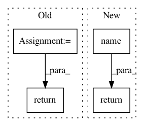

702498ca092ed5a04e0eb68ca28051dc2b1d49d5,homeassistant/external/wink/pywink.py,wink_bulb,deviceId,#wink_bulb#,214
Before Change
def deviceId(self):
deviceId = self.jsonState.get("light_bulb_id")
return deviceId or "Unknown Device ID"
def get_bulbs_and_switches():
arequestUrl = baseUrl + "/users/me/wink_devices"
After Change
super().__init__(ajsonobj, "light_bulbs")
def deviceId(self):
return self.jsonState.get("light_bulb_id", self.name())
def brightness(self):
return self._last_reading.get("brightness")
In pattern: SUPERPATTERN
Frequency: 3
Non-data size: 4
Instances
Project Name: home-assistant/home-assistant
Commit Name: 702498ca092ed5a04e0eb68ca28051dc2b1d49d5
Time: 2015-01-15
Author: paulus@paulusschoutsen.nl
File Name: homeassistant/external/wink/pywink.py
Class Name: wink_bulb
Method Name: deviceId
Project Name: home-assistant/home-assistant
Commit Name: 702498ca092ed5a04e0eb68ca28051dc2b1d49d5
Time: 2015-01-15
Author: paulus@paulusschoutsen.nl
File Name: homeassistant/external/wink/pywink.py
Class Name: wink_binary_switch
Method Name: deviceId
Project Name: analysiscenter/batchflow
Commit Name: ffb26630d54f6c951cac7fb861ba8ba2ad812a26
Time: 2019-07-29
Author: rhudor@gmail.com
File Name: batchflow/named_expr.py
Class Name: F
Method Name: get